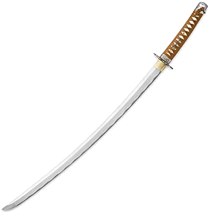

Tachi

A tachi (em japonês: 太刀:たち?) é uma espada
japonesa, conhecida por ser mais curvada e ligeiramente mais longa do
que a katana.
Essas espadas começaram a surgir no Período Heian (794-1184), quando
houve um grande avanço nas técnicas do trabalho com metal no Japão.Nesta
época, foi criado o método de forjar uma espada com a superfície
exterior dura e o núcleo macio e as peças passaram a receber inscrições.
Foi a partir da fabricação das tachi que a espada
japonesa ganhou identidade própria e nacional, passando a adquirir a
curvatura característica das nihonto (espada japonesa) mais
conhecidas, dando um salto em qualidade e se afastando dos modelos
tradicionais chineses.